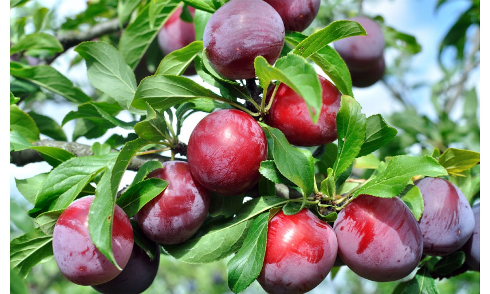

Ayuntamiento de Senés
JARDIN BOTANICO DE ESPECIES AUTOCTONAS DE SENES

Prunus domestica

El ciruelo (Prunus domestica) es un árbol frutal caducifolio muy extendido en el ámbito mediterráneo, cultivado por sus frutos dulces y jugosos. Se caracteriza por su porte medio y su floración abundante.
Presenta un tronco relativamente recto y una copa redondeada. Sus hojas son ovaladas y de borde dentado, de color verde. En primavera se cubre de flores blancas, que dan lugar a las ciruelas, frutos de distintos colores según la variedad.
El ciruelo se cultiva ampliamente en regiones templadas, adaptándose bien al clima mediterráneo. Prefiere suelos fértiles y bien drenados.
En el entorno de Senés, es habitual en huertos familiares y pequeñas explotaciones agrícolas.
Las ciruelas son frutos ricos en fibra, vitaminas y antioxidantes. Son conocidas por sus propiedades digestivas, especialmente en la regulación del tránsito intestinal.
También aportan energía y son muy valoradas en la alimentación saludable.
El ciruelo simboliza la renovación y la belleza efímera, debido a su llamativa floración primaveral.
También representa la abundancia y la fertilidad.
En Senés, el ciruelo ha sido cultivado en huertos para consumo familiar, tanto en fresco como en conservas.
Sus frutos han formado parte de la alimentación estacional.
El ciruelo florece en primavera y sus frutos maduran en verano.
Existen numerosas variedades de ciruelos, con frutos de distintos tamaños y colores.
Es uno de los frutales más cultivados en huertos tradicionales.